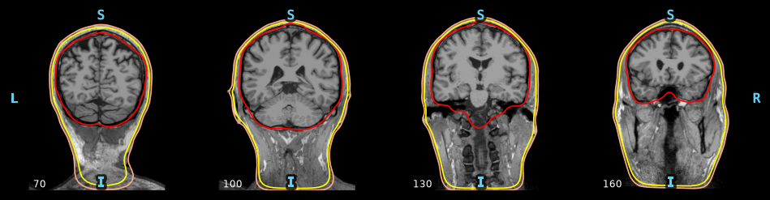
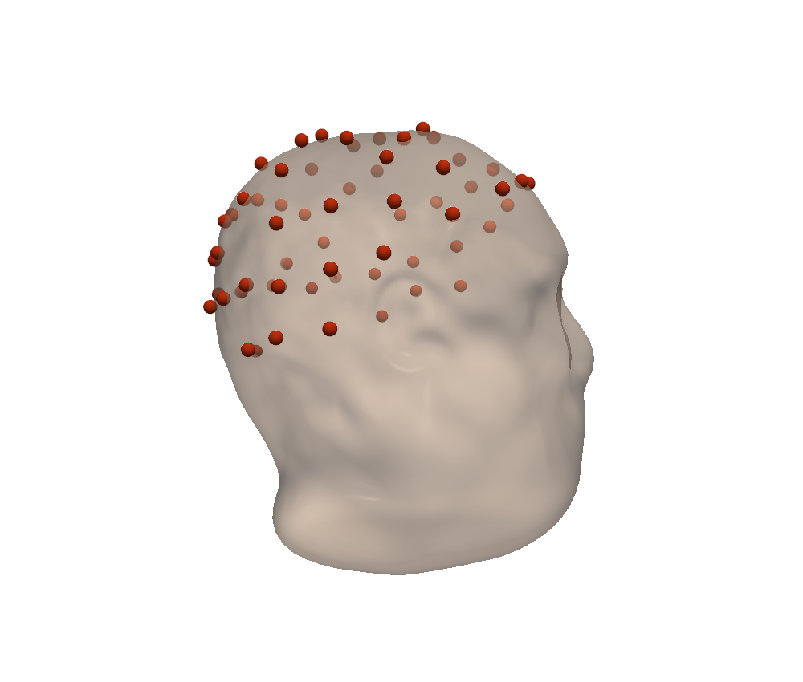
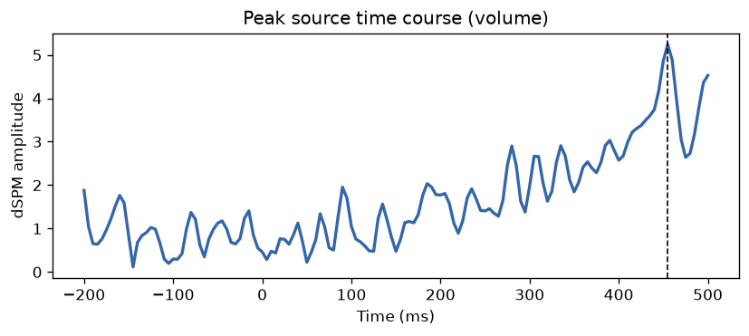

The alternative to the cortical route: FreeSurfer (via WSL) → three-layer BEM → volumetric source space → a source estimate throughout the brain volume. Same inputs, a different head model.
Cortical or volumetric?
The cortical route (SimNIBS FEM, Windows-native) constrains sources to the cortical surface. The volumetric route fills the whole brain volume with a regular grid — useful for deep or subcortical sources — at the cost of FreeSurfer under WSL and a three-layer BEM model.
The single call
A separate function, reconstruct_sources_volumetric, with the arguments specific to FreeSurfer and the BEM.
from mri2mne.wrapper import reconstruct_sources_volumetric
result = reconstruct_sources_volumetric(
subject="sampleW",
output_dir="D:/derivatives",
dicom_dir="D:/dicom/sample", # or t1_path=...
eeg_file="D:/eeg/sample.edf",
digitization="D:/dig/sample.elc",
wsl_distro="Ubuntu", # WSL distro with FreeSurfer
freesurfer_home="/usr/local/freesurfer",
pos_mm=5.0, # grid spacing (mm)
conductivity=(0.3, 0.006, 0.3), # brain, skull, scalp
events="find", event_id={"aud_l": 1},
inverse_method="dSPM", snr=3.0,
loose=1.0, # free orientation (volume)
)
print(result.source_estimate_file, result.peak) # ...-vl.stcStep 1 — Anatomy (DICOM → T1)
Identical to the cortical route: the DICOM is anonymised then converted to a T1 NIfTI.

Step 2 — FreeSurfer + three-layer BEM (WSL)
Under WSL, recon-all -autorecon1 then the watershed algorithm extract three boundary surfaces — inner skull, outer skull, skin — that MNE turns into a BEM model. Watershed is subject-dependent: on a noisy clinical T1 the surfaces can self-intersect, hence the bem_strict option.

Step 3 — The volumetric source space
Instead of points on the cortex, a regular grid fills the volume bounded by the inner skull. The spacing is set by pos_mm (5 mm here).

Step 4 — Coregistration
Same principle as the cortical route, but in FreeSurfer's MRI frame: the electrodes are aligned to the watershed skin surface.

Step 5 — BEM forward, inverse and sources
The three-layer BEM gives the forward model on the volume grid; the inverse uses free orientation (loose=1.0, suited to a volume). The estimate is saved as -vl.stc and is visualised on the T1.

